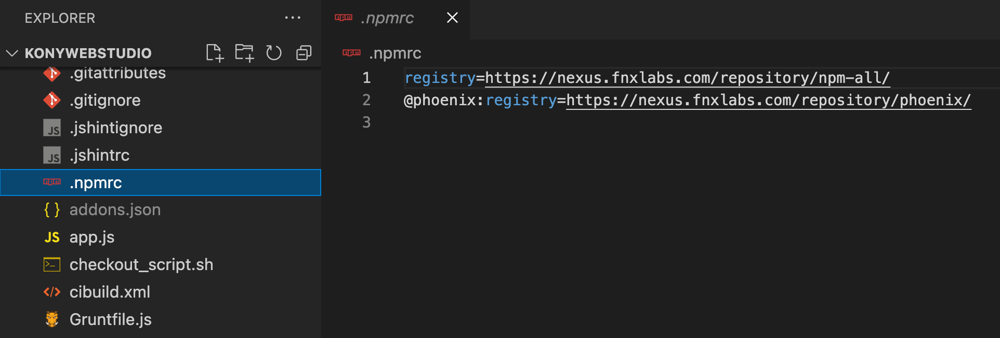
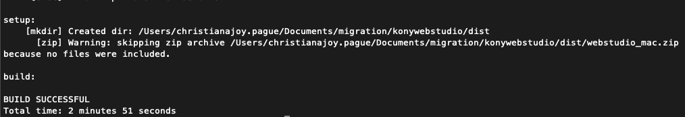
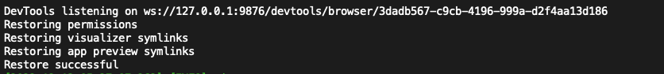
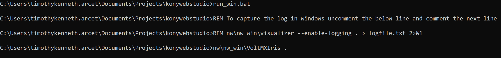
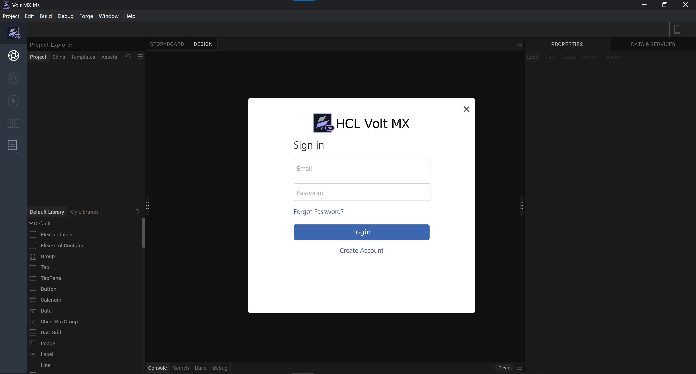
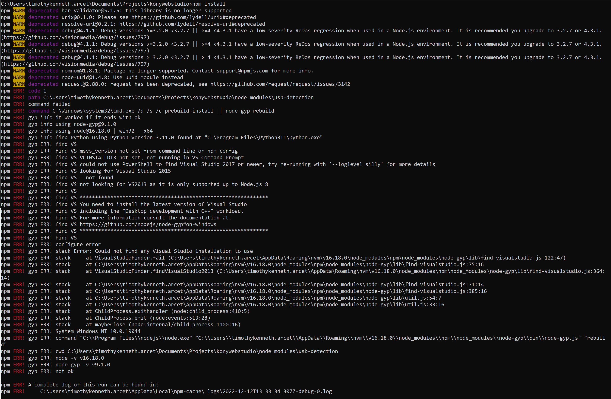

Installation
VPN
- Make sure you are connected to a VPN (GlobalProtect/SafeLinx) throughout the process.
- if no VPN access yet, refer to this guideline to request for vpn access.
SSH KEY
- Setup github ssh-key
- If no ssh key associated with your github account, refer to these links below:
External Dependencies
-
Install Apache Ant
Note: (these are the dependencies needed based from kbuild/bootscripts/externaldependencies.json)Refer to your machine OS below
- Mac
- Install Apache ant (make sure you have brew installed on your mac)
brew install ant
- Install Apache ant (make sure you have brew installed on your mac)
brew install ant
- Windows
- How to check version in terminal?
- ant -version
- ant -version
- If not working:
- Go to your machine's Environment Variables
- Create a variable ANT_HOME and supply it with apache ant dependency's file path installed in your machine
(Ex: c:\users\username\programfiles\ant\bin)
- Create a variable ANT_HOME and supply it with apache ant dependency's file path installed in your machine
- In the System Variable
- Add a new Path Variable, add the ant file path
(Ex: c:\users\username\programfiles\ant)
- Add a new Path Variable, add the ant file path
- Go to your machine's Environment Variables
- Mac
-
Install JAVA SDK 1.8
- Click Java SDK 1.8 link to download the installer (x64 installer)
- How to Install Java on Mac | Install Java JDK on macOS video tutorial
- How to Set $JAVA_HOME environment variable on macOS
- How to Install Java JDK on Windows 10 || JDK 1.8 (2020) video tutorial
- Java Downloads(x64 installer)
- How to set JAVA_HOME on Windows 10?
-
Install Nodejs 15.4
Project Directory
- Create a directory/folder (suggested name: Iris)
(Suggestion: Create this directory under same level of desktop, documentsm downloads, etc.
Ex: Macintosh > Users > userprofile) -
Inside the newly created project directory, clone via ssh the konywebstudio and hikes repos. See links below:
-
Konywebstudio
Note: our team branch is go-migration
Git git clone git@github01.hclpnp.com:phoenix-core/konywebstudio.git git fetch origin go-migration git checkout go-migration -
Hikes
git clone git@github01.hclpnp.com:phoenix-core/hikes.git
-
-
Add a .npmrc file inside the root directory of konywebstudio.
Inside this file, copy and paste the code below:registry=https://nexus.fnxlabs.com/repository/npm-all/ @phoenix:registry=https://nexus.fnxlabs.com/repository/phoenix/
-
Create a folder named build inside konywebstudio's root folder/directory
(Note: build folder will be just an empty folder.) -
In the terminal, cd to konywebstudio. Run the following command (according to machine OS).
-
Mac
- Building the installer (if build failed, run the command again.)
ant -f macbuild.xml

- After successful build, run this command to test if it is working.
./run_mach.hs

- Building the installer (if build failed, run the command again.)
-
Windows
- Install Node Package Manager
npm install
-
run this command to test if it is working.
.\run_win.bat -
Iris app will automatically opens up. Sample image below. 
- Install Node Package Manager
-
Additional Troubleshooting Steps
-
Install python
How to install Python 3.10.4 on Windows 10 -
Run this command.
(Make sure you are connected to Global Protect VPN and not Safelinx)- if error appeared (example: VS/gype) on npm install, run on CMD Admin
npm install --g --production windows-build-tools

- if error appeared (example: VS/gype) on npm install, run on CMD Admin
-
If successful, the end result should atleast look like this: